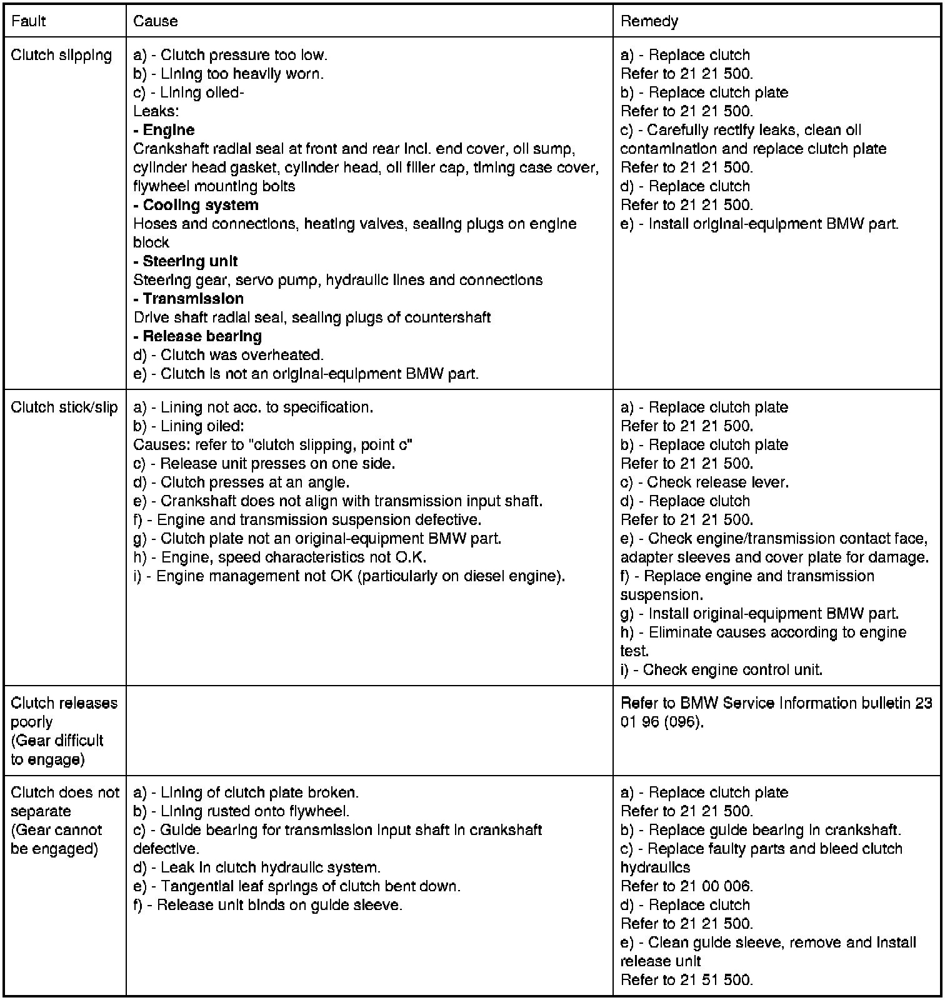
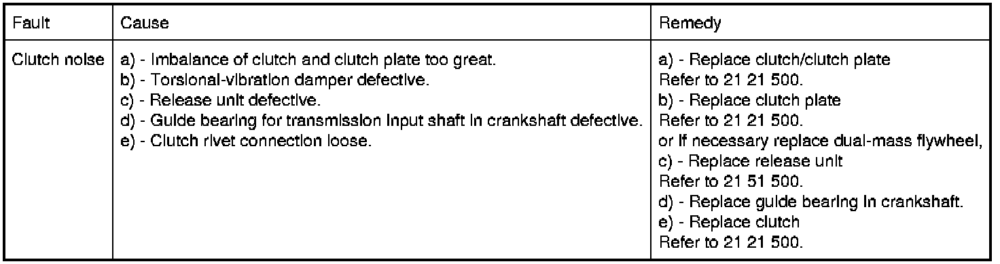

Operation CHARM
: Car repair manuals for everyone.
Home
>>
BMW
>>
2007
>>
X3 3.0si (E83) L6-3.0L (N52K)
>>
Repair and Diagnosis
>>
Transmission and Drivetrain
>>
Clutch
>>
Testing and Inspection
Clutch: Testing and Inspection
21 90 ... - Troubleshooting the clutch

